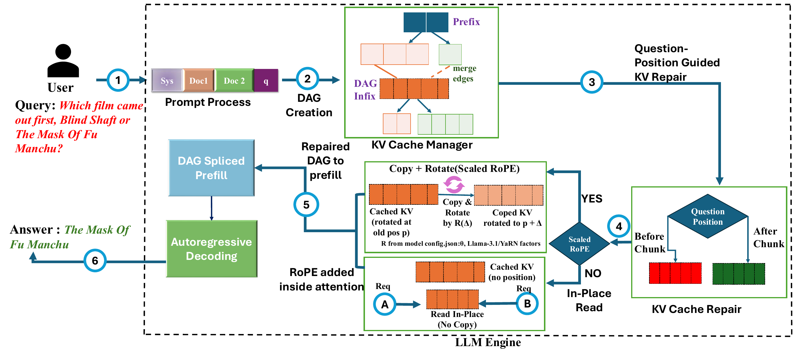
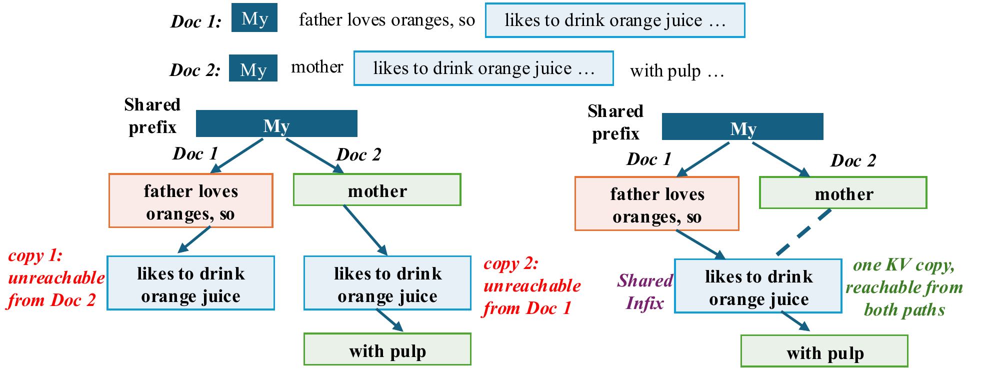

InfixCache: Content-Addressed KV Reuse for Mid-Prompt Sharing in LLM Serving
Prefix caching reuses KV state only when shared content forms a leading prefix, so it misses retrieved passages and conversation history that recur in the middle of a prompt. Existing infix systems (CacheBlend, EPIC, CacheTune) recompute a fixed share of each reused chunk.
I found that the damage from reuse depends on where the question sits relative to the reused text, not on a few bad tokens. I built InfixCache, which extends SGLang's radix tree into a DAG with content-addressed merge edges, so a shared span is stored once and reused at any offset, with no external store and no retraining.

How it works
DAG-extended radix tree
A shared span is stored once, read in place at any offset, and reachable from every prompt that contains it, all inside SGLang's own cache.
Question-position repair
Reused spans are kept or recomputed based on where the question sits. This matches full-recomputation quality on question-first requests across five models, while spending the same budget by a fixed share, at random, or by a drift score loses up to 0.23 F1.
Linked follow-up turns
Finished requests stay linked through the spans they shared, so a follow-up turn finds its whole earlier prompt cached and reaches its first token 2.6–6.9× faster than with a content-only index.

Results
- Peak-concurrency speedups. Caches up to 20× more tokens per request than RadixAttention. On tasks with shared passages, TTFT is 1.7–2.7× lower than RadixAttention and 1.6–2.6× lower than vLLM automatic prefix caching, and end-to-end latency is 1.2–1.8× and 1.1–1.8× lower than each.
- Against EPIC and CacheBlend. Matches full-recomputation F1 within run-to-run noise, with a repair path that costs 3 ms per request versus their 38–56 ms.
- Live serving. Mean TTFT falls 1.25–5.46× versus RadixAttention at 16 requests/s.
- Evaluation. Six models (Llama-3-8B, Qwen3-8B, Qwen2.5-14B/32B, Mistral-7B, Mixtral-8x7B, Yi-1.5-34B) on MuSiQue, HotpotQA, 2WikiMultihopQA and MT-RAG.
![Three bar charts for prefix-heavy agent sessions on Llama-3.1-8B on one A100 80GB, at 16, 24, 32 and 48 sessions, comparing block 16, ADAPT auto with global LRU, kvcached with its default 16K-token cache cap, and kvcached with no cap. ADAPT matches block 16's prefix-cache hit rate (75% at 16 and 24 sessions) and later-turn TTFT, while freeing far more KV memory in whole 2 MiB pages, for example 36.2 GB versus 22.9 GB at 16 sessions. Default kvcached frees similar memory but its hit rate falls to 7 to 12 percent](adapt-results.png)